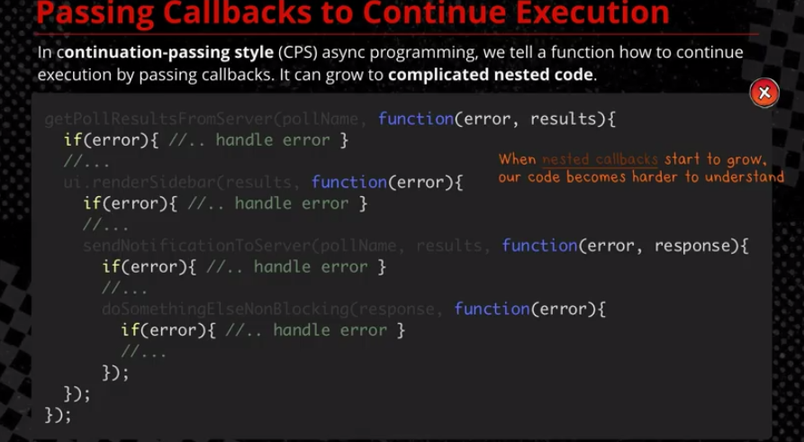
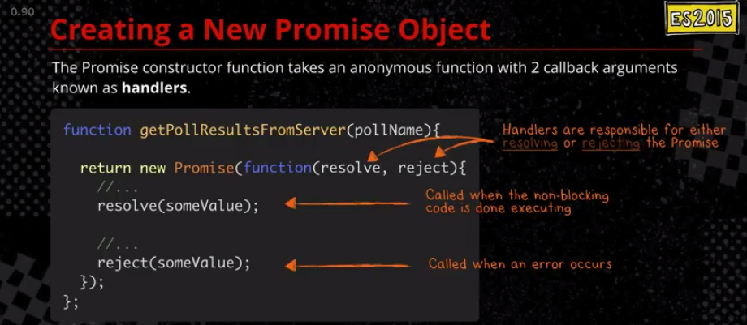
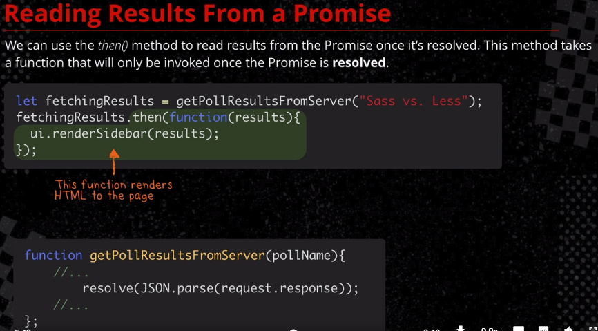
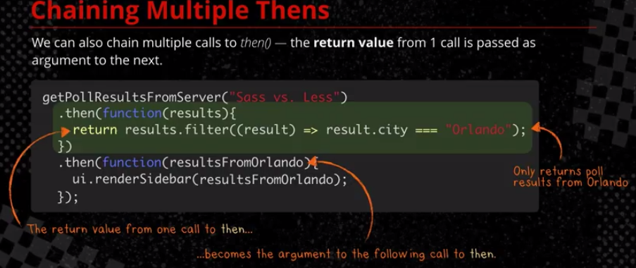
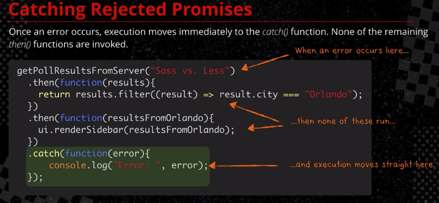

本文為 ES2015: The Shape of JavaScript to Come（CodeSchool）線上課程筆記
本文目錄：
非同步處理
方法一（ES5）：callback

會有以下問題：
- complicated nested code，難以讀懂
- 每個callback function 都要處理錯誤
方法二（ES2016）：Promise
什麼是 Promise ？
是一個容器物件，裡面保存著某個在未來才會結束的事件的結果。
A promise represents a future value, such as the eventual result of an asynchronous operation.
Whenever we return a new Promise object we are not returning a result, we are returning a future value, such as the eventual result of an async operation.
- 一個 Promise 物件的起始狀態是
pending。 - 一旦非同步操作結果完成（即調用
resolve(result)）狀態就會轉為resolved並凍結在resolved。 - 如果非同步操作中遇到錯誤（即調用
reject(error)） ，狀態則是轉為rejected並凍結在rejected
resolve和reject是 Javascript 引擎提供的預設函數
怎麼創建一個 Promise 物件？
通常用 new Promise(func) 建構式

Promise constructor function takes an anonymous function with 2 callback arguments known as handlers
function anAsyncFunction(arguments) {
return new Promise(
function(resolve, reject) {
// ... => promise instance obj is in pending state at start
if (成功) {
resolve(result); // => promise instance obj will be in fulfilled state
} else {
reject(error); // => promise instance obj will be in rejected state
}
}
);
};
傳進 Promise 建構式的參數函式裡面，包了我們要進行的非同步工作任務內容，以及如果任務完成或失敗時把 Promise 物件的狀態進行改變。
傳進 Promise 建構式的參數函式在 new Promise 後就會立刻執行。
怎麼 work with 一個 promise 物件？
當 promise 的 instance object 產生之後，可以用 then 方法指定 resolved 狀態和 rejected 狀態的 callback function。
then方法可以接受两个 callback function 作为参数。第一个 callback function 是 Promise object 的状态变为 Resolved 时调用，第二个 callback function 是 Promise object 的状态变为 Reject 时调用。其中，第二个函数是可选的，不一定要提供。这两个函数都接受 Promise object 传出的值作为参数。

function anAsyncFunction(arguments) {
return new Promise(
function(resolve, reject) {
// ...
}
);
};
anAsyncFunction(arguments) // => return a Promise object
.then( // The first callback function (as argument of then) will be invoked when Promise object resolved
function(results){
return results.filter(
(result) => result.city === "Orlando"
);
};
)
.then(
)
We can pass value one by one
The value return by the first
then()becomes the argument of the next one

